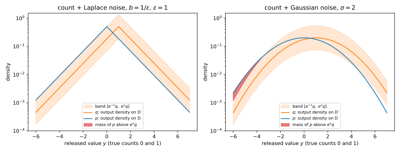
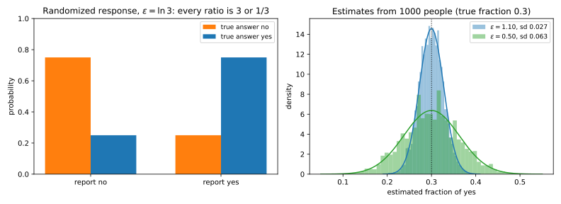
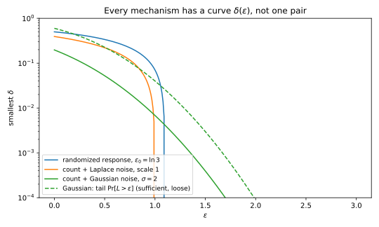
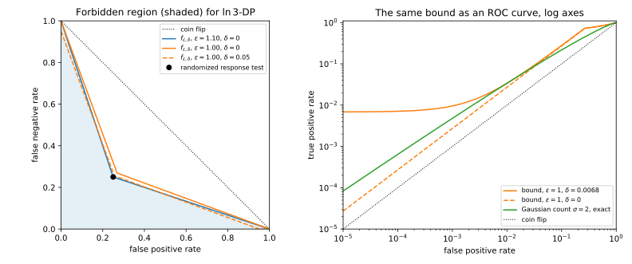
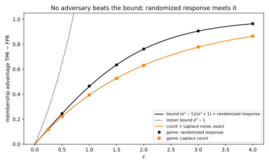
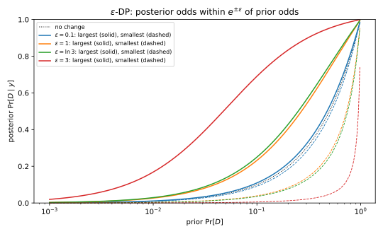
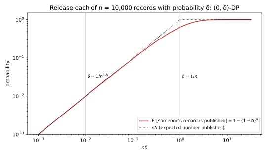

18 The definition of differential privacy
18.1 Why this matters
Part 2 broke models. A membership attacker looked at a trained model and decided whether a given record was in its training set. A reconstruction attacker solved for the private bits behind a table of answers. Each attack was a game: the challenger ran an algorithm on one of two datasets that differ in one person, and the adversary guessed which (Threat models and privacy games). Each attack worked because the output looked different enough on the two datasets for a test to tell them apart (Membership inference).
This chapter turns that observation into a definition. If no test can tell the two datasets apart, every attack of Part 2 fails at once, whatever the adversary knows and however much it computes. Differential privacy (DP) asks exactly this: for every pair of datasets that differ in one person, the distribution of the output barely changes. It is a property of the algorithm, not of the data or of a particular attack, and you can check it with pencil and paper.
The chapter answers four questions:
- What counts as “differ in one person”? The neighbouring relation, which fixes the unit of privacy.
- What does “barely changes” mean? Pure \(\varepsilon\)-DP bounds the ratio of the output probabilities. Approximate \((\varepsilon, \delta)\)-DP allows the ratio bound to fail on a set of probability at most \(\delta\).
- What does the guarantee buy? A bound on every test’s error rates, on the advantage of every membership attacker, and on how far any adversary’s posterior can move.
- What does it not buy? It says nothing about what can be learned from the population, it treats correlated records as separate people, and it is worthless if \(\delta\) is as large as \(1/n\).
18.1.1 The one idea: the privacy loss is a likelihood ratio
Run a randomized algorithm \(M\) on two neighbouring datasets \(D\) and \(D'\), and look at one output \(y\). You can ask how much more likely this output was if the data were \(D\) than if they were \(D'\). That is a ratio of two probabilities (or densities), \(p_{M(D)}(y)\) over \(p_{M(D')}(y)\), and its logarithm is called the privacy loss: \[L_{D,D'}(y) = \ln\frac{p_{M(D)}(y)}{p_{M(D')}(y)} \tag{18.1}\] If \(L\) is 0, the output is equally likely in both worlds and says nothing about which dataset was used. If \(L\) is large and positive, the output is far more likely under \(D\), so seeing it is strong evidence for \(D\); if it is large and negative, strong evidence for \(D'\). This is the log-likelihood ratio of Divergences: the evidence that \(y\) gives for “the data were \(D\)” over “the data were \(D'\)”. The logarithm turns ratios into differences, so evidence from independent pieces of output adds up.
Part 1 showed that this one quantity drives everything about telling two distributions apart. The best test of “\(D\) or \(D'\)?” compares the likelihood ratio with a threshold (the Neyman–Pearson lemma of Hypothesis testing), and each divergence between two distributions is some summary of the likelihood ratio. So if you want no test to work well, the natural thing to bound is the privacy loss. Differential privacy is a bound on the privacy loss. Pure DP bounds it everywhere, \(|L| \le \varepsilon\). The largest value of \(L\) is the max-divergence, so pure DP is a bound on the max-divergence. Approximate DP allows the bound to fail on outputs that carry a little probability mass \(\delta\); the divergence that measures exactly this excess mass is the hockey-stick divergence, defined in the Toolkit below. Everything else in the chapter is a consequence of this bound, read through the Part 1 tools (Table 18.1).
| Result | Where it is used |
|---|---|
| Neighbouring relations (add/remove, replace; example, user, group) | Stating what a guarantee protects; amplification by subsampling in Subsampling in Part 4 |
| Pure \(\varepsilon\)-DP and approximate \((\varepsilon, \delta)\)-DP | Every mechanism and every proof in this part |
| Randomized response | The first mechanism; the worst case for composition in Advanced and optimal composition; local DP in Local, shuffle and distributed trust models |
| Max-divergence and hockey-stick forms | Proving privacy of a mechanism; post-processing; numerical accounting |
| Hypothesis-testing form, \(\mathrm{FPR} + e^\varepsilon\,\mathrm{FNR} \ge 1 - \delta\) | f-DP in Gaussian differential privacy; auditing a model by attacking it |
| Membership-advantage bound | Turning \(\varepsilon\) into what an attacker of Part 2 can achieve |
| Bayesian (posterior-odds) form | Explaining \(\varepsilon\) to people who think in probabilities of a secret |
| Why \(\delta \ll 1/n\) | Choosing \(\delta\) |
| What DP does not protect | Knowing when the guarantee does not answer your question |
How to read this chapter. Read the definition section and the randomized-response section first; together they are the core. The divergence, testing and advantage sections are three readings of the same inequality, so read them in one sitting. The last two sections, on \(\delta\) and on what DP does not protect, are short and matter in practice more than any proof.
Notation for the part. \(M\) is a randomized algorithm, a mechanism, that maps a dataset to a random output in a set \(\mathcal Y\). \(D \simeq D'\) means that \(D\) and \(D'\) are neighbours. \(p_{M(D)}\) is the probability mass function or density of \(M(D)\), and \(\Pr[M(D) \in S]\) the probability of an event \(S \subseteq \mathcal Y\). The privacy parameters are \(\varepsilon \ge 0\) and \(\delta \in [0, 1]\). \(L_{D,D'}\) is the privacy loss of Equation 18.1; it is positive where the output favours \(D\). For a function \(f\) from datasets to \(\mathbb R^d\), the \(\ell_1\) and \(\ell_2\) sensitivities are \(\Delta_1 f = \max_{D \simeq D'}\|f(D) - f(D')\|_1\) and \(\Delta_2 f = \max_{D \simeq D'}\|f(D) - f(D')\|_2\): the most that changing one neighbour can move \(f\), measured as a sum of absolute changes or as a Euclidean distance. The Laplace and Gaussian mechanisms uses them to calibrate noise. Logarithms are natural.
18.2 Toolkit: four facts from Part 1
The derivations below reuse four facts from Part 1. Each is restated here with its short proof, so you do not need to look them up. In the first two, \(P\) and \(Q\) are two distributions on the same finite set, with probabilities \(p(y)\) and \(q(y)\), and \(r(y) = p(y)/q(y)\) is their likelihood ratio at the outcome \(y\).
18.2.1 Fact 1 — The worst event for a ratio is a single outcome
Suppose you want the largest possible ratio \(P(S)/Q(S)\) over all events \(S\). An event’s probability is the sum of the probabilities of its outcomes, and each outcome contributes \(p(y) = r(y)\,q(y)\) to \(P(S)\). So \(P(S)\) is \(Q(S)\) times a weighted average of the ratios \(r(y)\) over the outcomes in \(S\), with weights \(q(y)/Q(S)\). An average is never larger than its largest term: \(P(S) = \sum_{y \in S}r(y)q(y) \le (\max_y r(y))\,Q(S)\). And the event \(\{y^*\}\) that holds only the outcome \(y^*\) with the largest ratio reaches that value. Grouping outcomes into a bigger event can only dilute the worst ratio, never raise it: \[\max_{S:\,Q(S) > 0}\frac{P(S)}{Q(S)} = \max_y\frac{p(y)}{q(y)} = e^{D_\infty(P\|Q)}. \tag{18.2}\] The max-divergence \(D_\infty(P\|Q) = \ln\max_y p(y)/q(y)\) is just the logarithm of this largest ratio (Divergences). The practical consequence is that pure DP, a bound on ratios of event probabilities, can be checked outcome by outcome.
18.2.2 Fact 2 — The worst event for a difference is \(\{r > \gamma\}\)
Now take a number \(\gamma \ge 1\) and look for the event that makes the difference \(P(S) - \gamma Q(S)\) as large as possible. Each outcome \(y\) in \(S\) adds \(p(y) - \gamma q(y)\) to that difference. This is positive exactly when \(p(y) > \gamma q(y)\), that is, when the likelihood ratio \(r(y)\) exceeds \(\gamma\). So the best event takes every outcome with a positive contribution and leaves out every other one, and the best difference is the sum of the positive parts. Writing \((x)_+ = \max\{x, 0\}\), \[\max_S\big[P(S) - \gamma Q(S)\big] = \sum_y\big(p(y) - \gamma q(y)\big)_+ = E_\gamma(P\|Q). \tag{18.3}\] This sum is the hockey-stick divergence \(E_\gamma(P\|Q)\), named after the shape of the function \((x)_+\): flat at zero, then rising. It is the probability mass of \(P\) that sticks out above \(\gamma\) times \(Q\). A randomized choice \(\phi(y) \in [0, 1]\) in place of an event (include \(y\) with probability \(\phi(y)\)) does no better: the quantity \(\sum_y\phi(y)(p(y) - \gamma q(y))\) is linear in each \(\phi(y)\), so it is largest with \(\phi(y) = 1\) where the coefficient is positive and \(\phi(y) = 0\) where it is not, which is the event above. The practical consequence is that approximate DP, which bounds such differences, can be checked with one sum instead of a search through all \(2^{|\mathcal Y|}\) events.
18.2.3 Fact 3 — A test’s errors are probabilities of one event
An adversary who sees \(y\) and must decide between “the data were \(D\)” (the null hypothesis) and “the data were \(D'\)” uses some decision rule, and a deterministic rule is just an event \(S\): say “\(D'\)” when \(y \in S\), and “\(D\)” otherwise. Its two ways of being wrong are then probabilities of \(S\). Its false positive rate is the probability of saying “\(D'\)” when the data were \(D\), \(\alpha = \Pr[M(D) \in S]\). Its false negative rate is the probability of saying “\(D\)” when the data were \(D'\), \(\beta = \Pr[M(D') \notin S]\). A randomized test says “\(D'\)” with probability \(\phi(y)\) after seeing \(y\); then \(\alpha = \mathbb E_{M(D)}[\phi]\) and \(\beta = 1 - \mathbb E_{M(D')}[\phi]\), the same formulas with the indicator of \(S\) replaced by \(\phi\) (Hypothesis testing, Fact 1). The practical consequence is that any inequality between \(\Pr[M(D) \in S]\) and \(\Pr[M(D') \in S]\) is an inequality between the error rates of a test.
18.2.4 Fact 4 — Posterior odds are prior odds times the likelihood ratio
Suppose someone believes, before seeing the output, that the data are \(D\) with probability \(\Pr[D]\) and \(D'\) with probability \(\Pr[D']\). Bayes’ rule says that after seeing \(y\), \(\Pr[D \mid y] = \Pr[D]\,p_{M(D)}(y)/p(y)\), where \(p(y)\) is the overall probability of \(y\). The same holds for \(D'\) with the same \(p(y)\) underneath. So when you take the ratio of the two posteriors, the normalizer \(p(y)\) cancels, and what is left is the prior ratio times the likelihood ratio: \[\frac{\Pr[D \mid y]}{\Pr[D' \mid y]} = \frac{\Pr[D]}{\Pr[D']}\cdot\frac{p_{M(D)}(y)}{p_{M(D')}(y)} = \frac{\Pr[D]}{\Pr[D']}\cdot e^{L_{D,D'}(y)}. \tag{18.4}\] A ratio of the form \(\Pr[D]/\Pr[D']\) is called the odds of \(D\) (Hypothesis testing, the Bayesian view). The practical consequence is that a bound on the privacy loss \(L\) is a bound on how far any belief can move.
18.3 Neighbouring datasets
18.3.1 Context
“Differ in one person” needs a precise meaning before anything can be proved. A dataset is a multiset of records drawn from a universe \(\mathcal X\) of possible records. The neighbouring relation says which pairs of datasets the guarantee must protect. It fixes the unit of privacy: the thing whose presence, absence or value the output must not reveal. Choosing it is a modelling decision, and most misunderstandings of a DP claim come from not stating it.
18.3.2 Statement
There are two standard ways to say that \(D\) and \(D'\) differ in one record. They are parallel options, and each protects something different:
- Add/remove (unbounded DP): \(D \simeq D'\) if one is obtained from the other by adding or removing one record. The size \(n\) of the dataset is itself private.
- Replace (bounded DP, also substitution): \(D \simeq D'\) if \(|D| = |D'|\) and they differ in the value of one record. The size \(n\) is public.
Separately, you choose what one record is. There are three common granularities:
- Example-level: a record is one training example, one row, one event.
- User-level: a record is all the data of one person. A user who wrote 200 messages is one record, not 200.
- Group-level: \(D\) and \(D'\) differ in up to \(k\) records. This is what you get for free from example-level DP, at a price (Post-processing, group privacy and composition).
The two relations are linked, because a replacement is a removal followed by an addition. To turn Alice’s record into Dan’s, first remove Alice’s (one add/remove step), then add Dan’s (a second step). So a replace-neighbour is two add/remove steps away. Pure \(\varepsilon\)-DP, defined in the next section, says that one step between neighbours can multiply the probability of any output event by at most \(e^\varepsilon\). Two steps can multiply it by at most \(e^\varepsilon \cdot e^\varepsilon = e^{2\varepsilon}\), which gives: \[\varepsilon\text{-DP under add/remove} \implies 2\varepsilon\text{-DP under replace}. \tag{18.5}\] The converse fails: a guarantee under replace only ever compares datasets of the same size, so it says nothing about pairs of different sizes.
18.3.3 Derivation
- Build the two-step path. Let \(D \simeq D'\) under replace: \(D\) has record \(x\) where \(D'\) has \(x'\). Let \(D_0 = D \setminus \{x\}\) be \(D\) with that record removed. Then \(D\) and \(D_0\) differ by one removal, and \(D_0\) and \(D'\) differ by one addition (of \(x'\)), so both pairs are add/remove neighbours.
- Chain the ratio bound along the path. Pure DP (Equation 18.7 of the next section with \(\delta = 0\)) says that for neighbours, every event’s probability under one is at most \(e^\varepsilon\) times its probability under the other. Apply it once for \(D, D_0\) and once for \(D_0, D'\): for every event \(S\), \[\Pr[M(D) \in S] \le e^\varepsilon\Pr[M(D_0) \in S] \le e^\varepsilon\cdot e^\varepsilon\Pr[M(D') \in S]. \tag{18.6}\]
- Check the other direction. DP must hold with \(D\) and \(D'\) in either order. Walking the same path from \(D'\) back to \(D\) gives \(\Pr[M(D') \in S] \le e^{2\varepsilon}\Pr[M(D) \in S]\), so the pair satisfies \(2\varepsilon\)-DP.
- Show the converse fails with a counterexample. Take the mechanism “output the number of records \(n\)”. Any two datasets of the same size give the same output, so it is \(0\)-DP under replace. Under add/remove, \(M(D)\) and \(M(D')\) are point masses at \(n\) and \(n + 1\), and the event \(\{n + 1\}\) has probability 1 under one and 0 under the other. No finite \(e^\varepsilon\) times 0 reaches 1, so no \(\varepsilon\) satisfies the definition.
For approximate DP, where each step allows an additive slack \(\delta\) as well, the same path gives \(\Pr[M(D) \in S] \le e^\varepsilon\big(e^\varepsilon\Pr[M(D') \in S] + \delta\big) + \delta\), that is, \((2\varepsilon, (1 + e^\varepsilon)\delta)\) (Exercise 2).
18.3.4 Interpretation
The unit of privacy is what the guarantee is about. Example-level DP on a dataset in which one person contributes 200 examples protects each message, not the person. Removing the person changes 200 records, and the group-level price in Post-processing, group privacy and composition shows how much weaker the guarantee for a group of 200 is.
The two relations protect different things. Add/remove protects participation: the adversary cannot tell whether you are in the data at all. That is the question membership inference asks, so add/remove is the relation that matches it. Replace protects the value of your record but assumes the attacker already knows the dataset size, and with it often that you took part.
Neighbours range over every record in the universe \(\mathcal X\), including absurd ones (a person aged 900). This is the worst case, and a mechanism is DP only if it hides even those records. That is why mechanisms clip or bound their inputs before adding noise.
Finally, Equation 18.5 can be tight, and when it is depends on the mechanism. It is tight when one replacement changes the output in two places, as the example below shows. When a replacement changes the output in only one place, replace-DP is cheaper than the factor 2 suggests.
18.3.5 Example: who are the neighbours?
Take \(D = (\text{Alice: smoker}, \text{Bob: non-smoker}, \text{Carol: smoker})\), with records of the form (person, answer). Table 18.2 checks five candidate datasets against both relations.
| Candidate \(D'\) | Add/remove neighbour? | Replace neighbour? |
|---|---|---|
| (Alice: smoker, Bob: non-smoker) | yes: Carol removed | no: size differs |
| (Alice: smoker, Bob: non-smoker, Carol: smoker, Dan: non-smoker) | yes: Dan added | no: size differs |
| (Alice: non-smoker, Bob: non-smoker, Carol: smoker) | no: two steps | yes: Alice’s answer changed |
| (Alice: smoker, Bob: non-smoker, Dan: smoker) | no: two steps | yes: Carol’s record replaced by Dan’s |
| (Alice: non-smoker, Bob: smoker, Carol: smoker) | no | no: two records changed |
Now release the histogram (number of smokers, number of non-smokers) with independent Laplace noise of scale \(b = 1/\varepsilon\) in each bin. To see what each kind of neighbour costs, you need the privacy loss of this release, which comes from two facts about the Laplace distribution (Divergences, the Laplace pair). First, the Laplace density centred at \(c\) is proportional to \(e^{-|y - c|/b}\), so the log ratio of the densities centred at \(c\) and \(c'\) is \((|y - c'| - |y - c|)/b\). By the triangle inequality, \(|y - c'| - |y - c| \le |c - c'|\), so the log ratio is at most \(s/b\) when the centres are \(s\) apart, with equality for \(y\) beyond both centres. Second, the two bins get independent noise, so the joint density is a product of the two bins’ densities and the log ratios of the bins add.
Removing Carol changes one bin (the smokers) by 1 and leaves the other alone, so the largest privacy loss is \(1/b = \varepsilon\). Changing Alice’s answer moves one count from one bin to the other: both bins change by 1, each contributes up to \(1/b\), and the largest loss is \(2\varepsilon\). The script finds both maxima on a grid: 1.0000 and 2.0000 at \(\varepsilon = 1\). Here Equation 18.5 is tight, because a replacement changes the output in two places. If you release only the number of smokers, a replacement changes one count by at most 1, and the cost under replace is \(\varepsilon\), not \(2\varepsilon\).
18.3.6 Check yourself
- A hospital releases statistics with example-level DP, where an example is one visit. A patient has 30 visits. What does the guarantee say about that patient? (Only that each visit is protected. The patient is a group of 30 records, and the guarantee for the group is much weaker; see group privacy.)
- Why does a replace-DP guarantee not protect against learning whether you took part? (Under replace the dataset size is public and pairs of different sizes are never compared. Whether you are in the data is a question about pairs of different sizes.)
18.4 Pure and approximate differential privacy
18.4.1 Context
With the neighbours fixed, “the output distribution barely changes” needs a measure. Part 1 offers many, and the choice matters. An average-case measure such as the Kullback–Leibler divergence, which averages the privacy loss over outputs, can be small while one rare output exposes a person completely. Differential privacy takes the worst case over everything that can vary: over all neighbouring pairs, over all events, with no assumption on the adversary’s knowledge or computing power.
18.4.2 Statement
The definition asks that no event become much more likely when one person’s record changes. “Much more likely” is measured by a multiplicative factor \(e^\varepsilon\), so that small \(\varepsilon\) means a ratio close to 1. On top of that, a small additive slack \(\delta\) is allowed, so that events of tiny probability are not held to the ratio. Formally, a mechanism \(M\) is \((\varepsilon, \delta)\)-differentially private if for every pair of neighbours \(D \simeq D'\) and every event \(S \subseteq \mathcal Y\), \[\Pr[M(D) \in S] \le e^\varepsilon\,\Pr[M(D') \in S] + \delta. \tag{18.7}\] Because the neighbouring relation is symmetric (if \(D \simeq D'\) then \(D' \simeq D\)), the inequality also holds with \(D\) and \(D'\) swapped.
The case \(\delta = 0\) is pure DP, written \(\varepsilon\)-DP. With no slack, the ratio of any event’s probabilities must stay within \(e^\varepsilon\), and by Fact 1 this is the same as asking it outcome by outcome: for discrete outputs, pure DP is equivalent to the pointwise bound \(p_{M(D)}(y) \le e^\varepsilon\,p_{M(D')}(y)\) for every \(y\), which together with the swapped bound is \(|L_{D,D'}(y)| \le \varepsilon\).
The case \(\delta > 0\) is approximate DP (Dwork, Kenthapadi, McSherry, Mironov & Naor, 2006). It has no pointwise form. The tempting bound “\(p_{M(D)}(y) \le e^\varepsilon\,p_{M(D')}(y) + \delta\) for every \(y\)” is much weaker, because it pays the slack \(\delta\) once per outcome instead of once per event, and it is not a privacy definition.
18.4.3 Derivation
Pure DP is pointwise. The goal is to show that the event form and the outcome form say the same thing when \(\delta = 0\).
- Events imply outcomes. A single outcome is an event, so take \(S = \{y\}\) in Equation 18.7 to get the pointwise bound.
- Outcomes imply events. An event’s probability is a sum over its outcomes, so summing the pointwise bound over \(y \in S\) gives \(\Pr[M(D) \in S] = \sum_{y \in S}p_{M(D)}(y) \le e^\varepsilon\sum_{y \in S}p_{M(D')}(y)\). This is the argument of Fact 1.
- For densities the same holds with “for every \(y\)” replaced by “for almost every \(y\)”, since single points have probability zero and changing the density at a few points changes no event’s probability.
Approximate DP is not pointwise. The difference is that adding \(\delta\) to each outcome is not the same as adding it once to each event.
- Events imply outcomes. Again take \(S = \{y\}\). So \((\varepsilon, \delta)\)-DP implies the pointwise bound.
- Outcomes do not imply events. Summing the pointwise bound over \(S\) gives \(\Pr[M(D) \in S] \le e^\varepsilon\Pr[M(D') \in S] + |S|\,\delta\), because each of the \(|S|\) outcomes brings its own \(\delta\). The slack grows with the number of outcomes in \(S\).
- A counterexample shows how bad this gets. Let \(M(D)\) be uniform on \(\{1, \dots, m\}\) and \(M(D')\) uniform on \(\{m + 1, \dots, 2m\}\). Every outcome has \(p_{M(D)}(y) \le 1/m\), so the pointwise bound holds with \(\delta = 1/m\) for every \(\varepsilon\), even when \(p_{M(D')}(y) = 0\). But the event \(S = \{1, \dots, m\}\) has probability 1 under \(M(D)\) and 0 under \(M(D')\), so Equation 18.7 needs \(\delta = 1\). With \(m = 1000\), the script gives pointwise \(\delta = 0.0010\) and event \(\delta = 1.0000\). The outputs on \(D\) and \(D'\) never overlap, so one look at the output tells which dataset was used, and yet the pointwise slack looks tiny.
Why events and not outputs. The adversary does not need to see one particular output. It needs any decision rule, and by Fact 3 a decision rule is an event: “say \(D'\) when \(y \in S\)”. Bounding every event therefore bounds every attack.
18.4.4 Interpretation
The factor \(e^\varepsilon\) is a multiplicative bound. For small \(\varepsilon\), \(e^\varepsilon \approx 1 + \varepsilon\) (the first two terms of the exponential series), so every event changes probability by at most a fraction about \(\varepsilon\) of itself. At \(\varepsilon = 0.1\), an event of probability 0.5 under \(M(D')\) has probability at most \(0.5e^{0.1} = 0.553\) under \(M(D)\). At \(\varepsilon = 1\) the bound is \(0.5e = 1.36\), which is above 1 and so says nothing about that event. Values used in practice range from below 1 to around 10, and large values promise little (Section 18.8).
The slack \(\delta\) is additive. It allows events of probability up to \(\delta\) under \(M(D)\) to be arbitrarily more likely than under \(M(D')\), even impossible under \(M(D')\). Section 18.10 shows why it must be tiny.
The definition is worst case in every direction: over all neighbouring pairs (not typical ones), over all events (not typical outputs), and with no assumption on the adversary. That is what makes DP hold against attacks that have not been invented yet, and also what makes it expensive. The randomness in it is the mechanism’s own. The probability is over the coins of \(M\), with the dataset held fixed, and nothing is assumed about how the data were generated.
Figure 18.1 draws the definition for a count released with noise. Pure DP asks the density on \(D\) to stay inside the band between \(e^{-\varepsilon}\) and \(e^\varepsilon\) times the density on \(D'\). Laplace noise stays inside everywhere, because its log density ratio is bounded, as in the histogram example of Section 18.3. Gaussian noise leaves the band in the tail, because the log ratio of two Gaussians with the same spread is a straight line in \(y\) and grows without bound. The mass outside the band is what \(\delta\) must pay for.

18.4.5 Example: the smallest \(\varepsilon\) for a three-person survey
Take three people with bits \((1, 0, 1)\) and a neighbour \((0, 0, 1)\) in which the first bit changed. Each person runs randomized response, the mechanism of the next section, with \(\varepsilon = \ln 3\): they report their true bit with probability \(\frac34\) and the flipped bit with probability \(\frac14\), independently of each other. The output is one of \(2^3 = 8\) report vectors, so there are \(2^8 = 256\) events, and the script checks all of them.
The largest ratio \(\Pr[M(D) \in S]/\Pr[M(D') \in S]\) is 3.0000, the same as the largest ratio for a single outcome, as Fact 1 says. You can see where the 3 comes from: only the first person’s bit differs, so in the probability of any report vector the second and third factors are the same on \(D\) and \(D'\) and cancel, and the first factor is \(\frac34\) against \(\frac14\) when the first report is 1.
Likewise, the largest \(\Pr[M(D) \in S] - 2\Pr[M(D') \in S]\) over the 256 events is 0.2500, equal to the hockey-stick sum of Fact 2 with \(\gamma = 2\). By Fact 2, the best event collects the outcomes whose ratio exceeds 2, which are the four report vectors whose first report is 1 (ratio 3; the others have ratio \(\frac13\)). Their total probability is \(\frac34\) on \(D\) and \(\frac14\) on \(D'\), so the sum is \(\frac34 - 2 \cdot \frac14 = 0.25\). The brute force over events and the one-line formulas agree.
18.4.6 Check yourself
- A mechanism is \(0\)-DP. What does that say about its output? (Its distribution is the same on any two neighbours, so, by chaining, on any two datasets connected by a path of neighbours. Its output does not depend on the data at all.)
- Why is it no use to check approximate DP only on single outcomes? (The pointwise slack \(\delta\) adds up over the outcomes of an event. Two distributions with disjoint supports pass the pointwise check with \(\delta = 1/m\).)
18.5 Randomized response
18.5.1 Context
You want the fraction of people who have done something embarrassing: cheated on an exam, used a drug, evaded a tax. Asked directly, people lie. Warner (1965) proposed a survey protocol in which the interviewer cannot know any individual’s true answer: each respondent tosses a coin in private. On heads, they answer truthfully. On tails, they toss again and answer “yes” on heads and “no” on tails. Every “yes” now has a plausible excuse, yet the population fraction can still be estimated, because the coins’ behaviour is known and averages out over many people. Randomized response is the first differentially private mechanism, half a century before the definition, and it is the reference point for the whole part.
18.5.2 Statement
The idea is to tell the truth with a probability \(t\) that is a little above \(\frac12\). Then each report leans toward the truth, which is what lets you estimate the population, but the ratio of the chances of a given report under the two possible true bits is only \(t/(1 - t)\). Setting that ratio to \(e^\varepsilon\) and solving for \(t\) gives \(t = e^\varepsilon/(1 + e^\varepsilon)\). So randomized response at level \(\varepsilon\) reports a person’s bit \(x \in \{0, 1\}\) truthfully with probability \(t = e^\varepsilon/(1 + e^\varepsilon)\) and flipped with probability \(1 - t\). Applied independently to each of \(n\) people, it is \(\varepsilon\)-DP under replace.
Warner’s two coins are a special case. A respondent tells the truth if the first coin lands heads (probability \(\frac12\)), or if it lands tails and the second coin happens to give the true answer (probability \(\frac12\cdot\frac12\)). So \(t = \frac12 + \frac12\cdot\frac12 = \frac34\), the ratio is \(t/(1 - t) = 3\), and Warner’s coins are randomized response at \(\varepsilon = \ln 3 = 1.0986\).
To estimate the true fraction \(\pi\) of ones, note that the fraction of reported ones is pushed toward \(\frac12\) by the coins in a known way, so you can undo the push. Write \(y_1, \dots, y_n\) for the reports and \(\bar y\) for their mean. The expected value of \(\bar y\) is \((1 - t) + \pi(2t - 1)\) (derived below), and solving that for \(\pi\) gives the estimate \[\hat\pi = \frac{\bar y - (1 - t)}{2t - 1} \tag{18.8}\] which is unbiased. Undoing the push also scales up the noise in \(\bar y\) by \(1/(2t - 1)\), which is large when \(t\) is close to \(\frac12\), so the estimate’s standard deviation is \[\operatorname{sd}(\hat\pi) = \frac{\sqrt{t(1 - t)}}{(2t - 1)\sqrt n} = \frac{e^{\varepsilon/2}}{(e^\varepsilon - 1)\sqrt n} \approx \frac{1}{\varepsilon\sqrt n}\quad\text{for small }\varepsilon. \tag{18.9}\] The approximation uses \(e^{\varepsilon/2} \approx 1\) and \(e^\varepsilon - 1 \approx \varepsilon\) for small \(\varepsilon\).
18.5.3 Derivation
Privacy for one person. There are two inputs and two outputs, so the whole mechanism is the table of output probabilities in Table 18.3. The privacy loss of each report is the log of the ratio between the two rows. Every ratio is \(t/(1 - t) = e^\varepsilon\) or its inverse, so \(|L| \le \varepsilon\) for every output, and by Fact 1 this is \(\varepsilon\)-DP.
| True bit | \(\Pr[\text{report } 1]\) | \(\Pr[\text{report } 0]\) | At \(\varepsilon = \ln 3\) |
|---|---|---|---|
| 1 | \(t = \frac{e^\varepsilon}{1 + e^\varepsilon}\) | \(1 - t = \frac{1}{1 + e^\varepsilon}\) | 0.75, 0.25 |
| 0 | \(1 - t\) | \(t\) | 0.25, 0.75 |
| Ratio, row 1 / row 0 | \(e^\varepsilon\) | \(e^{-\varepsilon}\) | 3, 1/3 |
Privacy for \(n\) people. The point is that the other people’s reports do not change between neighbours, so they cancel out of the likelihood ratio.
- The output distribution factors. People toss their own coins independently, so the probability of a report vector is a product of one factor per person: \(p_{M(D)}(y_1, \dots, y_n) = \prod_i p_i(y_i \mid x_i)\), where \(p_i(y_i \mid x_i)\) is the probability that person \(i\) reports \(y_i\) when their true bit is \(x_i\).
- Neighbours differ in one factor. Under replace, \(D\) and \(D'\) differ only in person \(j\)’s bit. All other factors are equal on the two datasets and cancel in the ratio.
- The loss is one person’s loss. What is left is person \(j\)’s factor, \(L_{D,D'}(y) = \ln\frac{p_j(y_j \mid x_j)}{p_j(y_j \mid x_j')} \in \{-\varepsilon, 0, \varepsilon\}\), which is 0 if the two bits happen to be equal.
The estimate. A report is 1 with probability \(t\) if the true bit is 1 and \(1 - t\) if it is 0. Averaging over the population, in which a fraction \(\pi\) have bit 1, gives \(\mathbb E\bar y = \pi t + (1 - \pi)(1 - t) = (1 - t) + \pi(2t - 1)\). Solving for \(\pi\) gives Equation 18.8, and because the estimate is a linear function of \(\bar y\), linearity of expectation makes it unbiased. For the spread, each report is a Bernoulli variable that is 1 with probability \(t\) or \(1 - t\), and either way its variance is \(t(1 - t)\). The reports are independent, so their variances add, and \(\operatorname{Var}\bar y = t(1 - t)/n\). Dividing \(\bar y\) by \(2t - 1\) divides the variance by \((2t - 1)^2\), and the square root is the first form of \(\operatorname{sd}(\hat\pi)\). Substituting \(t = e^\varepsilon/(1 + e^\varepsilon)\) gives \(t(1 - t) = e^\varepsilon/(1 + e^\varepsilon)^2\) and \(2t - 1 = (e^\varepsilon - 1)/(e^\varepsilon + 1)\), hence the closed form.
18.5.4 Interpretation
Deniability is the privacy. At \(\varepsilon = \ln 3\), a “yes” is three times more likely from a true “yes” than from a true “no”, never more. Anyone can say “the coin made me say it”.
The noise is added per person, before the data leave them. Nobody, not even the analyst, sees a true bit. This is the local model, in which no one is trusted with the raw data; Local, shuffle and distributed trust models develops it.
Privacy costs samples. The error is about \(1/(\varepsilon\sqrt n)\), so halving \(\varepsilon\) doubles the error, and since the error falls like \(1/\sqrt n\), recovering the accuracy takes four times as many people. Without privacy, counting the true bits of a fixed group has error 0, so all of this error is the price of privacy.
The guarantee holds under replace only. Under add/remove, the number of reports reveals \(n\), and with it whether you took part. Randomized response protects the value of your answer, not the fact that you answered.
18.5.5 Example: a survey of 1000 people
Of \(n = 1000\) respondents, \(\pi = 0.3\) have the sensitive trait, and all use Warner’s coins (\(t = 0.75\)). The expected fraction of “yes” reports is \(0.3 \times 0.75 + 0.7 \times 0.25 = 0.225 + 0.175 = 0.4\), and Equation 18.8 turns it back into \((0.4 - 0.25)/0.5 = 0.3\). The formula gives \(\operatorname{sd}(\hat\pi) = \sqrt{0.1875}/(0.5\sqrt{1000}) = 0.0274\), where \(0.1875 = 0.75 \times 0.25\) and \(0.5 = 2 \times 0.75 - 1\). Ten thousand simulated surveys give a mean estimate of 0.2996 and a standard deviation of 0.0278, close to both.
For comparison, the sampling error of a survey of 1000 people drawn from a large population is \(\sqrt{0.3 \times 0.7/1000} = 0.0145\): randomized response at \(\varepsilon = \ln 3\) adds noise about twice as large as the sampling noise already there. At \(\varepsilon = 0.5\) the formula gives 0.0626 (Figure 18.2), and at \(\varepsilon = 0.1\) it gives \(9.9958/\sqrt n\), or 0.316 for 1000 people: an error larger than the fraction being estimated, so the survey is useless.

18.5.6 Check yourself
- What is \(t\) at \(\varepsilon = 0\), and what does the estimate do then? (\(t = \frac12\): every report is a fair coin and carries no information. The denominator \(2t - 1\) is zero, so no estimate is possible.)
- Two people answer with randomized response at \(\varepsilon = \ln 3\). Is the pair of reports \(\ln 3\)-DP or \(2\ln 3\)-DP? (\(\ln 3\)-DP under replace, since neighbours differ in one person and the other factor cancels. A group of both people is protected only at \(2\ln 3\).)
18.6 Divergence forms and the privacy loss
18.6.1 Context
Equation 18.7 quantifies over all events. That is fine for a mechanism with two outcomes and unusable for continuous outputs, where there are infinitely many events. Facts 1 and 2 showed that the worst event is always a set of outcomes where the likelihood ratio is high. Rewriting the definition as a divergence turns “for all events” into one formula, and it shows what \(\delta\) measures: the probability mass on which the privacy loss exceeds \(\varepsilon\), discounted by how far it exceeds it.
18.6.2 Statement
For every pair of neighbours \(D \simeq D'\), write \(P = M(D)\) and \(Q = M(D')\) for the two output distributions, with probabilities \(p(y)\) and \(q(y)\). There are three results, each a direct reading of a Toolkit fact.
- Pure DP is a max-divergence bound. Since the worst event ratio is the worst outcome ratio (Fact 1), \(M\) is \(\varepsilon\)-DP if and only if \(D_\infty(P\|Q) \le \varepsilon\) for every ordered pair of neighbours.
- Approximate DP is a hockey-stick bound. The definition asks \(P(S) - e^\varepsilon Q(S) \le \delta\) for every event, and Fact 2 says the largest left side is the hockey-stick divergence \(E_{e^\varepsilon}\). Factoring \(p(y)\) out of each term turns this sum into an average over outputs drawn from \(P\): each output counts with the weight \((1 - e^{\varepsilon - L})_+\), which is 0 when its privacy loss \(L\) is at most \(\varepsilon\) and approaches 1 as \(L\) grows. So \(M\) is \((\varepsilon, \delta)\)-DP if and only if, for every ordered pair of neighbours, \[E_{e^\varepsilon}(P\|Q) = \sum_y\big(p(y) - e^\varepsilon q(y)\big)_+ = \mathbb E_{y \sim P}\Big[\big(1 - e^{\varepsilon - L_{D,D'}(y)}\big)_+\Big] \le \delta. \tag{18.10}\] So the smallest \(\delta\) for a given \(\varepsilon\) is a function \(\delta(\varepsilon)\), the largest hockey-stick divergence over neighbouring pairs.
- A sufficient condition on the privacy loss. Since each weight in that average is at most 1, and is 0 unless \(L > \varepsilon\), the average is at most the probability that \(L > \varepsilon\). So if \(\Pr_{y \sim P}[L_{D,D'}(y) > \varepsilon] \le \delta\) for every ordered pair, then \(M\) is \((\varepsilon, \delta)\)-DP.
18.6.3 Derivation
- Pure. By Fact 1, \(\max_S P(S)/Q(S) = e^{D_\infty(P\|Q)}\). Requiring this largest ratio to be at most \(e^\varepsilon\) is requiring \(D_\infty \le \varepsilon\).
- Approximate, first form. Equation 18.7 says \(P(S) - e^\varepsilon Q(S) \le \delta\) for every \(S\). That holds for every \(S\) exactly when it holds for the worst \(S\), and by Fact 2 with \(\gamma = e^\varepsilon\), the maximum of the left side over \(S\) is \(E_{e^\varepsilon}(P\|Q)\).
- Approximate, second form. Factor \(p(y)\) out of each term and use \(q/p = e^{-L}\) from Equation 18.1: \((p - e^\varepsilon q)_+ = p\,(1 - e^\varepsilon q/p)_+ = p\,(1 - e^{\varepsilon - L})_+\). A sum of \(p(y)\) times a function of \(y\) is the average of that function under \(P\). Outcomes with \(p(y) = 0\) contribute nothing to either side, so dividing by \(p\) is harmless.
- The sufficient condition. For every \(y\), \((1 - e^{\varepsilon - L})_+ \le \mathbf 1[L > \varepsilon]\), where \(\mathbf 1[\cdot]\) is 1 when the condition holds and 0 otherwise. The left side is 0 when \(L \le \varepsilon\) (then \(e^{\varepsilon - L} \ge 1\)), and less than 1 otherwise. Averaging both sides under \(P\) gives \(E_{e^\varepsilon}(P\|Q) \le \Pr_P[L > \varepsilon] \le \delta\).
18.6.4 Interpretation
\(\delta\) is not “the probability that privacy fails”. By Equation 18.10, it is the average of \((1 - e^{\varepsilon - L})_+\), which counts an output with loss just above \(\varepsilon\) for almost nothing and an output with infinite loss in full. The tail probability \(\Pr[L > \varepsilon]\) counts both in full, so it is always at least \(\delta(\varepsilon)\), and often several times larger.
A mechanism has a curve, not a pair. Every \(\varepsilon\) has its own smallest \(\delta\), and a mechanism is \((\varepsilon, \delta(\varepsilon))\)-DP for all \(\varepsilon\) at once (Figure 18.3). Quoting a single pair throws the rest of the curve away. Numerical accounting in Part 4 computes these curves for compositions of mechanisms.
Whether the curve reaches zero depends on whether the privacy loss is bounded. If the loss never exceeds some \(\varepsilon_0\) (randomized response, Laplace noise), then at \(\varepsilon = \varepsilon_0\) every weight \((1 - e^{\varepsilon - L})_+\) is 0 and the curve reaches \(\delta = 0\). If the loss is unbounded (Gaussian noise), some outputs always have \(L > \varepsilon\), so \(\delta(\varepsilon) > 0\) for every \(\varepsilon\): no pure guarantee exists, only approximate ones.
It helps to think of the privacy loss as a random variable. Draw \(y\) from \(M(D)\) and compute \(L_{D,D'}(y)\). The distribution of this number, the privacy loss distribution, determines \(\delta(\varepsilon)\) through Equation 18.10. Accountants in Numerical accounting work with it directly.

18.6.5 Example: three mechanisms on the same axes
All three mechanisms release one bit or one count that changes by 1 between neighbours. For each, the recipe is the same: find where the likelihood ratio exceeds \(e^\varepsilon\), and add up the excess mass \(p - e^\varepsilon q\) there.
Randomized response at \(\varepsilon_0 = \ln 3\). From Table 18.3, the two outputs have ratios 3 and \(\frac13\), so for \(\varepsilon < \ln 3\) the only outcome with \(p > e^\varepsilon q\) is the one with ratio 3, which has \(p = t\) and \(q = 1 - t\). So \(\delta(\varepsilon) = \big(t - e^\varepsilon(1 - t)\big)_+ = (3 - e^\varepsilon)_+/4\), using \(t = \frac34\). The script gives \(\delta(0.5) = 0.3378\), \(\delta(1) = 0.0704\) and \(\delta(\ln 3) = 0\).
A count plus Laplace noise of scale \(b = 1\). The output densities are \(\mathrm{Lap}(c, 1)\) and \(\mathrm{Lap}(c + 1, 1)\), Laplace densities \(\frac12 e^{-|y - \text{centre}|}\) one unit apart. Their log ratio falls from 1 to \(-1\) as \(y\) crosses from one centre to the other, so the ratio exceeds \(\gamma\) on a half-line: all \(y\) below \(c + y^*\), with \(y^* = (1 - \ln\gamma)/2\). Integrating the two Laplace tails over that half-line gives the formula from Part 1, \(E_\gamma = 1 - e^{-(1 - \ln\gamma)/2}\) for \(\ln\gamma \le 1\), and \(E_\gamma = 0\) once \(\ln\gamma\) reaches the largest loss, 1. So \(\delta(0.5) = 1 - e^{-0.25} = 0.2212\) and \(\delta(1) = 0\): this count is \(1\)-DP.
A count plus Gaussian noise with \(\sigma = 2\). Here the log ratio is a straight line in \(y\), which makes the privacy loss itself Gaussian. Measure the shift between the two outputs in units of the noise: \(\mu = 1/\sigma = 0.5\). Under \(M(D)\), the privacy loss is normal with mean \(\mu^2/2\) and variance \(\mu^2\); under \(M(D')\) it has mean \(-\mu^2/2\) and the same variance. Write \(\Phi\) for the standard normal cumulative distribution function, so that \(\Phi(z)\) is the probability that a standard normal variable is at most \(z\). Standardizing, \(\Pr[L > \varepsilon] = \Pr\big[Z > (\varepsilon - \mu^2/2)/\mu\big] = \Phi(\frac\mu2 - \frac\varepsilon\mu)\). The hockey-stick divergence is the \(P\)-probability of \(\{L > \varepsilon\}\) minus \(e^\varepsilon\) times its \(Q\)-probability (Fact 2), which is the Gaussian hockey-stick formula of Part 1, \(\delta(\varepsilon) = \Phi(\frac\mu2 - \frac\varepsilon\mu) - e^\varepsilon\Phi(-\frac\mu2 - \frac\varepsilon\mu)\). Table 18.4 compares the exact \(\delta\) with the tail.
| \(\varepsilon\) | 0.5 | 1 | 2 | 3 |
|---|---|---|---|---|
| Exact \(\delta(\varepsilon)\), Equation 18.10 | \(5.244\times10^{-2}\) | \(6.830\times10^{-3}\) | \(9.439\times10^{-6}\) | \(3.401\times10^{-10}\) |
| Tail \(\Pr[L > \varepsilon]\) | \(2.266\times10^{-1}\) | \(4.006\times10^{-2}\) | \(8.842\times10^{-5}\) | \(4.462\times10^{-9}\) |
| Tail / exact | 4.32 | 5.87 | 9.37 | 13.12 |
As a check on Equation 18.10, a Monte Carlo average of \((1 - e^{1 - L})_+\) over a million draws of \(L\) gives \(6.859\times10^{-3}\), against the exact \(6.830\times10^{-3}\). The tail bound is valid but loose by a factor that grows with \(\varepsilon\), from 4 to 13 here. The reason is the discount in Equation 18.10: most outputs in the tail have a loss only a little above \(\varepsilon\), so they count almost nothing toward \(\delta\) but fully toward the tail. Calibrating noise with the tail instead of the exact curve therefore wastes privacy budget, which is the subject of the analytic Gaussian calibration in The Laplace and Gaussian mechanisms.
18.6.6 Check yourself
- Why is the Laplace count \(1\)-DP while the Gaussian count with a similar spread is not \(\varepsilon\)-DP for any \(\varepsilon\)? (The Laplace log-likelihood ratio is bounded by \(1/b = 1\), so \(D_\infty = 1\). The Gaussian one is a straight line, unbounded in the tails, so \(D_\infty = \infty\).)
- In Equation 18.10, which outputs contribute most to \(\delta\)? (Those with a large privacy loss, where \((1 - e^{\varepsilon - L})_+\) is close to 1. Outputs with \(L\) just above \(\varepsilon\) contribute almost nothing.)
18.7 The hypothesis-testing interpretation
18.7.1 Context
A membership attacker is a test. It sees the output and decides between “the data were \(D\)” and “the data were \(D'\)”. Part 1 described any test by its two error rates, and the best achievable pairs by the trade-off function: for each false positive rate \(\alpha\), the smallest false negative rate any test can reach. Differential privacy turns out to be exactly a lower bound on the trade-off function, uniform over all neighbours (Wasserman & Zhou, 2010; Kairouz, Oh & Viswanath, 2015). This is the most operational reading of the definition: it says what an attacker’s receiver operating characteristic (ROC) curve, its true positive rate plotted against its false positive rate, can look like.
18.7.2 Statement
Let a test say “\(D'\)” (reject the null hypothesis \(H_0\) that the data are \(D\)) on the event \(S\), possibly randomized. Write \(\alpha\) for its false positive rate (FPR), \(\Pr[M(D) \in S]\), and \(\beta\) for its false negative rate (FNR), \(\Pr[M(D') \notin S]\). By Fact 3, both are probabilities of the event \(S\) or its complement, so the definition, which bounds the probability of every event, bounds them. Applied to the complement of \(S\), it says a test cannot have a small FPR without paying in FNR; applied with the roles of \(D\) and \(D'\) swapped, it says the same the other way round. Precisely, \(M\) is \((\varepsilon, \delta)\)-DP if and only if every test, for every pair of neighbours, satisfies \[\alpha + e^\varepsilon\beta \ge 1 - \delta \qquad\text{and}\qquad e^\varepsilon\alpha + \beta \ge 1 - \delta. \tag{18.11}\] Each inequality is a line in the plane of \((\alpha, \beta)\), and no test can lie below either line. So the smallest FNR at a given FPR, which is the trade-off function, is at least the higher of the two lines (or 0, since an error rate cannot be negative). Equivalently, the trade-off function of every pair of neighbours lies above \[f_{\varepsilon,\delta}(\alpha) = \max\big\{0,\ 1 - \delta - e^\varepsilon\alpha,\ e^{-\varepsilon}(1 - \delta - \alpha)\big\}. \tag{18.12}\] In terms of the true positive rate (TPR) \(1 - \beta\), the fraction of the time the test correctly says “\(D'\)”, the second inequality reads: at every false positive rate \(\alpha\), \(\mathrm{TPR} \le e^\varepsilon\alpha + \delta\).
18.7.3 Derivation
- The first inequality. Apply Equation 18.7 to the pair \((D, D')\) and the complement event \(S^c\), the outputs on which the test says “\(D\)”: \(\Pr[M(D) \notin S] \le e^\varepsilon\Pr[M(D') \notin S] + \delta\). The left side is \(1 - \alpha\) and the probability on the right is \(\beta\), so \(1 - \alpha \le e^\varepsilon\beta + \delta\), which rearranges to the first inequality.
- The second inequality. Apply Equation 18.7 to the swapped pair \((D', D)\) and the event \(S\): \(\Pr[M(D') \in S] \le e^\varepsilon\Pr[M(D) \in S] + \delta\). The left side is \(1 - \beta\) and the probability on the right is \(\alpha\), so \(1 - \beta \le e^\varepsilon\alpha + \delta\).
- Randomized tests. A test \(\phi(y) \in [0, 1]\) is not an event, so the definition does not apply to it directly. But Fact 2 showed that a randomized choice \(\phi\) can make \(\mathbb E_{M(D)}[\phi] - e^\varepsilon\mathbb E_{M(D')}[\phi]\) no larger than the best event can, which is \(E_{e^\varepsilon} \le \delta\). So the definition holds for \(\phi\) as well, and steps 1 and 2 go through with \(\phi\) and \(1 - \phi\) in place of the events.
- The converse. Every event \(S\) is a test. If Equation 18.11 holds for all tests, steps 1 and 2 read backwards give Equation 18.7 for every event and both orders of the pair.
- The trade-off form. Rearranged for \(\beta\), the two inequalities say \(\beta \ge 1 - \delta - e^\varepsilon\alpha\) and \(\beta \ge e^{-\varepsilon}(1 - \delta - \alpha)\), and \(\beta \ge 0\) always. So the smallest \(\beta\) any test can reach at level \(\alpha\) is at least the largest of the three, which is Equation 18.12.
18.7.4 Interpretation
The result draws a forbidden region. In the plane of (FPR, FNR), every attack against an \((\varepsilon, \delta)\)-DP mechanism lies on or above the two lines of Equation 18.11 (Figure 18.4, left). The two lines are mirror images of each other across the diagonal \(\alpha = \beta\), so they cross on it: setting \(\alpha = \beta\) in \(\alpha + e^\varepsilon\beta = 1 - \delta\) gives \(\alpha = \beta = (1 - \delta)/(1 + e^\varepsilon)\).
Low FPR is where DP bites. Part 2 evaluated membership attacks by their TPR at a low FPR, because an attack that flags someone while almost never flagging non-members is one that confidently identifies people. DP caps that TPR at \(e^\varepsilon\alpha + \delta\). At \(\alpha = 10^{-3}\), \(\varepsilon = 1\) and \(\delta = 10^{-5}\), no attack has TPR above \(e \times 10^{-3} + 10^{-5} = 0.002728\). The ratio TPR/FPR is at most \(e^\varepsilon + \delta/\alpha\), and as \(\alpha \to 0\) the \(\delta/\alpha\) term dominates (Figure 18.4, right): at very low FPR, the guarantee rests almost entirely on \(\delta\).
Auditing runs this in reverse. Measure an attack’s FPR and TPR on a trained model, and Equation 18.11 gives a lower bound on the \(\varepsilon\) the training algorithm can have: solving \(\mathrm{TPR} \le e^\varepsilon\,\mathrm{FPR} + \delta\) for \(\varepsilon\) gives the smallest value consistent with what you measured. The neighbouring pair is a training set with and without a planted canary, a record inserted on purpose to be detected. The canary is chosen to be as easy to detect as possible (a mislabeled or out-of-distribution example), because the definition bounds the worst record and an ordinary one gives a loose lower bound (memorization and extraction introduced canaries). Later parts use this to check the privacy claims of trained models.
The bound is tight for randomized response. Its test “say \(D'\) on report 0” (for neighbours \(x = 1\) and \(x' = 0\)) has \(\alpha = \beta = 1/(1 + e^\varepsilon)\), which is exactly the crossing point, the corner of the region. Most mechanisms sit strictly inside. The trade-off curve of the Gaussian count is smooth and curved, so it touches each of the two straight lines of \(f_{\varepsilon,\delta(\varepsilon)}\) at one point and lies above them elsewhere. Keeping the whole curve, instead of one \(f_{\varepsilon,\delta}\), is the idea of f-DP in Gaussian differential privacy.

18.7.5 Example: randomized response and the Gaussian count, as tests
Randomized response at \(\varepsilon = \ln 3\). The neighbours are a person’s bit being 1 (\(D\)) or 0 (\(D'\)). The best test says “\(D'\)” (bit 0) when the report is 0. Its FPR is \(\Pr[\text{report } 0 \mid 1] = 0.25\) and its FNR is \(\Pr[\text{report } 1 \mid 0] = 0.25\). Then \(\alpha + 3\beta = 0.25 + 0.75 = 1\): the first inequality of Equation 18.11 holds with equality. At FPR 0.25 the bound allows TPR at most \(3 \times 0.25 = 0.75\), and the test achieves exactly \(1 - 0.25 = 0.75\).
The Gaussian count with \(\sigma = 2\) is \((1, 0.00683)\)-DP by Table 18.4. At FPR \(10^{-3}\) the bound allows TPR up to \(e \times 10^{-3} + 0.00683 = 0.0095\). To compare, you need the best TPR any test can actually reach. By the Neyman–Pearson lemma, the best test thresholds the likelihood ratio, and for two Gaussians with the same spread that ratio grows steadily with \(y\), so the best test thresholds \(y\) itself. In units of the noise, \(y\) is standard normal under \(D\), so an FPR of \(10^{-3}\) needs the threshold \(\Phi^{-1}(0.999) \approx 3.09\), the point with 0.1% of the standard normal mass above it (\(\Phi^{-1}\) is the inverse of \(\Phi\)). Under \(D'\) the output is shifted by \(\mu = 0.5\), so the TPR is the probability that a normal with mean 0.5 exceeds that threshold. This is the Gaussian trade-off curve of Part 1: the exact best TPR is \(1 - \Phi(\Phi^{-1}(0.999) - 0.5) = 0.0048\). The bound holds, with a factor 2 of room, because at this FPR the \(\delta\) term is generous: \(0.00683\) alone is larger than the true TPR.
18.7.6 Check yourself
- Under \(\varepsilon\)-DP with \(\delta = 0\), can any test have FPR 0 and TPR above 0? (No. \(\mathrm{TPR} \le e^\varepsilon \times 0 + 0 = 0\). Certain identification with no false alarm is ruled out entirely; only \(\delta > 0\) allows it.)
- An attack reports TPR 0.05 at FPR 0.001 against a model trained with a claimed \(\varepsilon = 2\), \(\delta = 10^{-5}\). What do you conclude? (The claim is false, or the attack’s rates are mis-measured: the bound allows TPR at most \(e^2 \times 0.001 + 10^{-5} \approx 0.0074\).)
18.8 Bound on the membership advantage
18.8.1 Context
Part 2 measured a membership attacker by its advantage. In the membership game, the challenger flips a fair coin to pick \(D\) or \(D'\), runs \(M\) on it, and the adversary guesses which dataset was used. A guesser who ignores the output is right half the time, so the useful quantity is how much better than half the adversary does, doubled so that a perfect adversary scores 1: the advantage is \(2\Pr[\text{correct}] - 1\). With a fair coin, \(\Pr[\text{correct}] = \frac12\mathrm{TPR} + \frac12(1 - \mathrm{FPR})\), so the advantage equals \(\mathrm{TPR} - \mathrm{FPR} = 1 - \alpha - \beta\). Its best value over all adversaries is the total variation (TV) distance between \(M(D)\) and \(M(D')\), the largest difference \(\Pr[M(D') \in S] - \Pr[M(D) \in S]\) over events (Threat models and privacy games). The testing form of the previous section bounds the sum of errors \(\alpha + \beta\) from below, and so gives the largest advantage any DP mechanism can allow.
18.8.2 Statement
The adversary wants both error rates small at once, so it wants the smallest possible sum \(\alpha + \beta\). The two lines of Equation 18.11 keep it away from the origin, and the closest it can get is the point where the lines cross, \(\alpha = \beta = (1 - \delta)/(1 + e^\varepsilon)\). Plugging that point into \(1 - \alpha - \beta\) gives the bound: if \(M\) is \((\varepsilon, \delta)\)-DP, every adversary in the game between any two neighbours has \[\mathrm{Adv} = \mathrm{TPR} - \mathrm{FPR} \le \frac{e^\varepsilon - 1 + 2\delta}{e^\varepsilon + 1}, \qquad \Pr[\text{correct}] \le \frac{e^\varepsilon + \delta}{e^\varepsilon + 1}. \tag{18.13}\] For \(\delta = 0\) the bound is \((e^\varepsilon - 1)/(e^\varepsilon + 1)\). Multiplying top and bottom by \(e^{-\varepsilon/2}\) gives \((e^{\varepsilon/2} - e^{-\varepsilon/2})/(e^{\varepsilon/2} + e^{-\varepsilon/2})\), which is the hyperbolic tangent \(\tanh(\varepsilon/2)\), about \(\varepsilon/2\) for small \(\varepsilon\). Randomized response attains it.
18.8.3 Derivation
- Turn the advantage into a sum of errors. The advantage is \(1 - (\alpha + \beta)\), so the largest advantage comes from the smallest \(\alpha + \beta\) allowed by Equation 18.11, together with \(\alpha, \beta \ge 0\).
- Draw the feasible region. The allowed \((\alpha, \beta)\) pairs are the points on or above both lines of Equation 18.11 with both coordinates non-negative. This region’s lower boundary is a polygon with corners \((0, 1 - \delta)\) (where the first line meets the \(\beta\) axis), \((1 - \delta, 0)\) (where the second meets the \(\alpha\) axis) and the crossing point \(\alpha = \beta = (1 - \delta)/(1 + e^\varepsilon)\).
- Check the corners. A linear function such as \(\alpha + \beta\) is smallest over such a region at one of its corners, because moving along a straight edge changes it at a constant rate, so it keeps decreasing until a corner. At the first two corners \(\alpha + \beta = 1 - \delta\). At the crossing point it is \(2(1 - \delta)/(1 + e^\varepsilon)\), which is smaller since \(e^\varepsilon \ge 1\) makes \(2/(1 + e^\varepsilon) \le 1\).
- Compute the advantage. \(1 - 2(1 - \delta)/(1 + e^\varepsilon) = (e^\varepsilon - 1 + 2\delta)/(e^\varepsilon + 1)\). With a fair coin the success probability is \(\frac12 + \frac12\mathrm{Adv} = (e^\varepsilon + \delta)/(e^\varepsilon + 1)\).
- Show tightness. Randomized response at level \(\varepsilon\) has \(\alpha = \beta = 1/(1 + e^\varepsilon)\), the crossing point with \(\delta = 0\), so its advantage is \((e^\varepsilon - 1)/(e^\varepsilon + 1)\), exactly the bound.
- Extend to random datasets. Part 2’s game draws the dataset from a distribution before the coin flip. The bound holds for each fixed pair of neighbours, so it holds for the average over pairs, since an average of numbers below a bound is below the bound.
18.8.4 Interpretation
Small \(\varepsilon\) is strong. At \(\varepsilon = 0.1\) the bound is \(\tanh(0.05) \approx 0.05\), so the best attacker guesses right with probability at most \((1 + 0.05)/2 = 0.525\).
Large \(\varepsilon\) promises little. At \(\varepsilon = 5\) the bound is 0.9866: the definition allows an attacker who is right \((1 + 0.9866)/2 = 99.3\)% of the time. A model trained with \(\varepsilon = 8\) may be far safer than that in practice, but the guarantee itself does not say so.
There is an older, looser bound. Yeom et al. (2018) showed \(\mathrm{Adv} \le e^\varepsilon - 1\) for \(\varepsilon\)-DP. Since \(\tanh(\varepsilon/2) \approx \varepsilon/2\) and \(e^\varepsilon - 1 \approx \varepsilon\), the two have the same order at small \(\varepsilon\), but the older bound is about twice as large there, and it exceeds 1, so says nothing, once \(e^\varepsilon \ge 2\), that is, from \(\varepsilon = \ln 2\) on.
Most mechanisms do not reach the bound. The bound is for the worst mechanism with this \(\varepsilon\). A count with Laplace noise of scale \(1/\varepsilon\) has best advantage \(\mathrm{TV} = 1 - e^{-\varepsilon/2}\): the TV distance is the hockey-stick divergence at \(\gamma = 1\), and the Laplace calculation of Section 18.6, redone for centres \(s\) apart and scale \(b\), gives \(1 - e^{-s/(2b)}\), which is \(1 - e^{-\varepsilon/2}\) for \(s = 1\) and \(b = 1/\varepsilon\) (Part 1). It is below \(\tanh(\varepsilon/2)\) at every \(\varepsilon\) (Figure 18.5).

18.8.5 Example: the bound against two mechanisms
Table 18.5 compares the bound with the best advantage against randomized response and against the Laplace count.
| \(\varepsilon\) | 0.1 | 0.5 | 1 | \(\ln 3\) | 2 | 5 |
|---|---|---|---|---|---|---|
| Bound \(\tanh(\varepsilon/2)\) | 0.0500 | 0.2449 | 0.4621 | 0.5000 | 0.7616 | 0.9866 |
| Looser bound \(e^\varepsilon - 1\) | 0.1052 | 0.6487 | 1.7183 | 2.0000 | 6.3891 | 147.4 |
| Randomized response | 0.0500 | 0.2449 | 0.4621 | 0.5000 | 0.7616 | 0.9866 |
| Laplace count | 0.0488 | 0.2212 | 0.3935 | 0.4226 | 0.6321 | 0.9179 |
The script also plays the game 200,000 times with the likelihood-ratio adversary, which guesses \(D\) when the privacy loss of the output is positive and \(D'\) otherwise. At \(\varepsilon = 1\) it measures 0.4624 against randomized response (exact 0.4621) and 0.3953 against the Laplace count (exact 0.3935); at \(\varepsilon = 0.5\) and 2 the measurements are within 0.002 of the exact values too.
What does \(\delta\) do to this bound? With \(\delta = 10^{-5}\) at \(\varepsilon = 1\), it adds \(2\delta/(e + 1)\) to the advantage, and the bound moves only to 0.462123, the success probability to 0.731061: a small \(\delta\) barely changes the average-case advantage. The damage \(\delta\) can do is at low FPR, as Section 18.7 showed, and Section 18.10 shows how bad it can get.
18.8.6 Check yourself
- Why is the advantage bound reached at \(\alpha = \beta\)? (The two constraints are mirror images, so the region is symmetric about \(\alpha = \beta\), and the corner that minimizes \(\alpha + \beta\) is on that line.)
- The advantage bound at \(\varepsilon = 2\) is 0.76. Does this mean 76% of members are identified? (No. Advantage is TPR − FPR averaged over the coin flip, a single-pair worst case. It says nothing direct about the TPR at a low FPR, which Equation 18.11 bounds separately and much more tightly.)
18.9 The Bayesian interpretation
18.9.1 Context
People often ask a different question: “after seeing the output, how sure can someone be about me?” That is a question about posterior probabilities, the adversary’s beliefs after seeing the output. Fact 4 says the posterior odds are the prior odds times \(e^L\), so a bound on the privacy loss \(L\) turns directly into a bound on how far any posterior can move, whatever the prior. This is the reading that explains \(\varepsilon\) to someone who thinks in probabilities of a secret (Kasiviswanathan & Smith, 2014).
18.9.2 Statement
Consider an adversary who knows that the data are \(D\) or \(D'\), two neighbours, and believes beforehand that they are \(D\) with prior probability \(\pi = \Pr[D]\). Its prior odds are \(\pi/(1 - \pi)\). Each output multiplies these odds by \(e^{L}\), and pure DP keeps \(L\) between \(-\varepsilon\) and \(\varepsilon\), so the odds can be multiplied by at most \(e^\varepsilon\) and divided by at most \(e^\varepsilon\). If \(M\) is \(\varepsilon\)-DP, then after any output \(y\), \[e^{-\varepsilon}\frac{\pi}{1 - \pi} \le \frac{\Pr[D \mid y]}{\Pr[D' \mid y]} \le e^\varepsilon\frac{\pi}{1 - \pi}, \qquad \Pr[D \mid y] \le \frac{e^\varepsilon\pi}{e^\varepsilon\pi + 1 - \pi}. \tag{18.14}\]
Under approximate DP the privacy loss is not bounded everywhere, so this cannot hold for every output. What does hold is that outputs with a loss well above \(\varepsilon\) are rare. Pick a larger level \(\varepsilon' > \varepsilon\). Each output whose loss exceeds \(\varepsilon'\) is at least \(e^{\varepsilon'}\) times as likely under \(D\) as under \(D'\), so it contributes at least a fraction \(1 - e^{\varepsilon - \varepsilon'}\) of its probability to the excess mass that \(\delta\) bounds. So such outputs can have total probability at most \(\delta\) divided by that fraction. If \(M\) is only \((\varepsilon, \delta)\)-DP, the upper bounds hold with \(\varepsilon'\) in place of \(\varepsilon\) for every output except those in a set \(B\) with \[\Pr_{y \sim M(D)}[y \in B] \le \frac{\delta}{1 - e^{\varepsilon - \varepsilon'}}, \qquad \varepsilon' > \varepsilon. \tag{18.15}\]
18.9.3 Derivation
Pure DP.
- By Fact 4, the posterior odds are the prior odds times \(e^{L_{D,D'}(y)}\).
- Pure DP gives \(|L_{D,D'}(y)| \le \varepsilon\) for every \(y\) (the pointwise form of Section 18.4), so \(e^{L}\) lies between \(e^{-\varepsilon}\) and \(e^\varepsilon\). Multiplying the prior odds by these two extremes gives the odds bound.
- To get a bound on the probability itself, convert odds \(o\) to a probability, \(o/(1 + o)\). This is increasing in \(o\), so the largest odds give the largest probability. With \(o = e^\varepsilon\pi/(1 - \pi)\), multiplying top and bottom by \(1 - \pi\) gives the bound on \(\Pr[D \mid y]\).
Approximate DP. Let \(B = \{y : L_{D,D'}(y) > \varepsilon'\}\), the outputs whose privacy loss exceeds \(\varepsilon'\). The goal is to show \(B\) has small probability under \(P = M(D)\).
- Apply Equation 18.7 to the event \(B\): \(P(B) - e^\varepsilon Q(B) \le \delta\), with \(Q = M(D')\).
- On \(B\), the loss exceeds \(\varepsilon'\), which means \(p > e^{\varepsilon'}q\), or \(q < e^{-\varepsilon'}p\). Summing over \(B\) gives \(Q(B) < e^{-\varepsilon'}P(B)\).
- Substitute this into step 1. Replacing \(Q(B)\) by the larger \(e^{-\varepsilon'}P(B)\) makes the left side smaller, so \(P(B)\big(1 - e^{\varepsilon - \varepsilon'}\big) < \delta\). Since \(\varepsilon' > \varepsilon\), the factor in brackets is positive, and dividing by it gives Equation 18.15.
- Outside \(B\), the loss is at most \(\varepsilon'\), and steps 1–3 of the pure case, with \(\varepsilon'\) in place of \(\varepsilon\), give the upper bounds.
18.9.4 Interpretation
DP bounds the change in belief, not the belief. It is relative, not absolute. An adversary who is already 99% sure stays about that sure; DP only promises that the output does not make it much surer.
The adversary in this statement is as strong as can be. It knows every record except the one in question, since it knows the data are \(D\) or \(D'\). Against weaker adversaries, who are unsure about other records too, the same bound holds in a slightly different form: for the posterior about one person’s record, compared with the posterior computed from the data without that record (Kasiviswanathan & Smith, 2014).
With \(\delta\), the guarantee holds for most outputs only. Taking \(\varepsilon' = 2\varepsilon\) in Equation 18.15, the pure-DP reading holds at level \(2\varepsilon\) except on outputs of probability at most \(\delta/(1 - e^{-\varepsilon})\). A tiny \(\delta\) keeps that exception tiny; a large one does not.

18.9.5 Example: how sure can the interviewer be?
Back to Warner’s survey at \(\varepsilon = \ln 3\). The interviewer knows everyone’s answer except Alice’s and thinks there is a 50% chance that her true answer is “yes”. She reports “yes”. The prior odds are \(0.5/0.5 = 1\), and a “yes” report is 3 times as likely from a true “yes”, so the posterior odds are \(1 \times 3\), and the interviewer is now at most \(3/(3 + 1) = 75\)% sure. If the prior was 1%, the posterior is at most \(3 \times 0.01/(3 \times 0.01 + 0.99) = 0.0294\). Table 18.6 gives the bound for other values.
| \(\varepsilon\) | Prior 0.01 | Prior 0.1 | Prior 0.5 |
|---|---|---|---|
| 0.1 | 0.0110 | 0.1094 | 0.5250 |
| 1 | 0.0267 | 0.2320 | 0.7311 |
| \(\ln 3\) | 0.0294 | 0.2500 | 0.7500 |
| 3 | 0.1687 | 0.6906 | 0.9526 |
For approximate DP, take the Gaussian count with \(\sigma = 2\), which is \((1, 0.0068)\)-DP. Equation 18.15 with \(\varepsilon' = 2\) bounds the probability of an output with privacy loss above 2 by \(0.0068/(1 - e^{-1}) = 0.0108\). The exact probability is \(\Pr[L > 2] = 8.842\times10^{-5}\), from Table 18.4. The bound holds by a wide margin, because it uses only \((\varepsilon, \delta)\), not the shape of the Gaussian tail.
18.9.6 Check yourself
- An adversary is certain (\(\pi = 1\)) that Alice is in the data. Can an \(\varepsilon\)-DP output change that? (No. Prior odds are infinite, and multiplying by a factor in \([e^{-\varepsilon}, e^\varepsilon]\) keeps them infinite. DP limits what the output adds, not what the adversary already knows.)
- Why does Equation 18.14 not need the adversary’s prior to be “correct”? (Fact 4 holds for any prior. The bound is on the likelihood ratio, which does not depend on the prior.)
18.10 Why \(\delta\) must be much smaller than \(1/n\)
18.10.1 Context
Equation 18.7 lets \(\delta\) be anything in \([0, 1]\), and the advantage bound barely notices a small \(\delta\). So how small must it be? A deliberately terrible mechanism answers the question. It satisfies approximate DP with \(\varepsilon = 0\), the strongest possible \(\varepsilon\), and yet it publishes people’s records verbatim.
18.10.2 Statement
The mechanism “release each record with probability \(\delta\)” goes through the dataset and publishes each record, in full, independently with probability \(\delta\). It is DP because any one person is published only with probability \(\delta\), and otherwise the output does not depend on them at all: under add/remove it is \((0, \delta)\)-DP. But over a whole dataset of \(n\) records it publishes \(n\delta\) records on average. Each record escapes with probability \(1 - \delta\), independently, so all of them escape with probability \((1 - \delta)^n\), and at least one is published with probability \[1 - (1 - \delta)^n \approx 1 - e^{-n\delta}. \tag{18.16}\] So \(\delta = 1/n\) exposes someone with probability about \(1 - e^{-1} = 0.632\). A meaningful \((\varepsilon, \delta)\) guarantee needs \(\delta \ll 1/n\).
18.10.3 Derivation
- Couple the two runs. To compare the outputs on \(D\) and on \(D' = D \cup \{x\}\), run both with the same coins. Run the mechanism on \(D'\) by first running it on \(D\), then tossing one more coin for \(x\). The output on \(D'\) equals the output on \(D\) unless that last coin publishes \(x\), which happens with probability \(\delta\).
- Bound one direction. For any event \(S\), the output on \(D'\) can land in \(S\) either because the output on \(D\) did, or because the extra coin changed it. So \(\Pr[M(D') \in S] \le \Pr[M(D) \in S] + \Pr[x\text{ published}] = \Pr[M(D) \in S] + \delta\).
- Bound the other direction. With probability \(1 - \delta\) the extra coin does nothing and the outputs are equal, so \(\Pr[M(D') \in S] \ge (1 - \delta)\Pr[M(D) \in S] \ge \Pr[M(D) \in S] - \delta\), where the last step uses \(\Pr[M(D) \in S] \le 1\).
- Read off the parameters. Both directions match Equation 18.7 with factor \(1 = e^0\) and slack \(\delta\), so the mechanism is \((0, \delta)\)-DP.
- Count the exposure. Each of the \(n\) records is published independently with probability \(\delta\), so the number published is \(\mathrm{Binomial}(n, \delta)\), with mean \(n\delta\) and \(\Pr[\text{none}] = (1 - \delta)^n\). For small \(\delta\), \(\ln(1 - \delta) \approx -\delta\) (the first term of its Taylor series), so \((1 - \delta)^n = e^{n\ln(1 - \delta)} \approx e^{-n\delta}\).
18.10.4 Interpretation
\(\delta\) is a per-person budget for catastrophe. The definition allows each person to be exposed with probability up to about \(\delta\). Over \(n\) people, that is \(n\delta\) catastrophes on average. Only \(n\delta \ll 1\) makes the expected number of fully exposed people small.
Approximate DP allows certain identification. In the testing picture of Section 18.7, the test “is \(x\) in the output?” never fires when \(x\) is absent, so its FPR is 0, and it fires with probability \(\delta\) when \(x\) is present, so its TPR is \(\delta\). All of the \(\delta\) is spent at FPR 0, where pure DP allows nothing.
In practice, pick \(\delta\) well below \(1/n\); \(\delta = 1/n^{1.5}\) or a fixed small value such as \(10^{-5}\) for 60,000 training examples (Abadi et al., 2016) are common. This is less costly than it sounds. Reasonable mechanisms, like the Gaussian count, spread their \(\delta\) over many outputs with a moderately large loss, not over a few with infinite loss, so in practice a small \(\delta\) costs little \(\varepsilon\): in Table 18.4, going from \(\varepsilon = 1\) to \(\varepsilon = 3\) cuts \(\delta\) from \(6.830\times10^{-3}\) to \(3.401\times10^{-10}\).
If one person has many records, the relevant \(n\) is the number of people, not records, and the group-privacy cost of Post-processing, group privacy and composition also multiplies \(\delta\).

18.10.5 Example: ten thousand records
On a tiny dataset the script checks the claim directly. With \(n = 3\) and \(\delta = 0.1\), it enumerates the \(2^4\) possible outputs on \(D\) and on \(D \cup \{x\}\) (each of the at most four records is published or not) and finds \(\max_S|\Pr[M(D) \in S] - \Pr[M(D') \in S]| = 0.1000\), the hockey-stick divergence at \(\varepsilon = 0\). So the mechanism is \((0, 0.1)\)-DP and no better.
Now take \(n = 10{,}000\) records (Table 18.7).
| \(\delta\) | Expected records published, \(n\delta\) | \(\Pr[\text{at least one}]\) |
|---|---|---|
| \(10^{-4} = 1/n\) | 1 | 0.6321 |
| \(10^{-6}\) | 0.01 | \(9.950\times10^{-3}\) |
| \(10^{-8}\) | 0.0001 | \(9.999\times10^{-5}\) |
When \(n\delta\) is small, \(1 - e^{-n\delta} \approx n\delta\), which is why the last two rows have \(\Pr[\text{at least one}]\) almost equal to \(n\delta\). In 100,000 simulated runs at \(\delta = 1/n\), the mechanism published 1.0077 records on average and at least one record in a fraction 0.6351 of the runs, against 1 and 0.6321 from the formulas. A guarantee of \((0, 1/n)\)-DP is compatible with publishing a random person’s full record in most releases.
18.10.6 Check yourself
- Why doesn’t the advantage bound Equation 18.13 warn about this mechanism? (At \(\varepsilon = 0\) it gives advantage at most \(\delta\), which is small. The harm is concentrated: a few people are exposed completely while most are untouched. An average over the coin flip hides that.)
- Is \(\delta = 10^{-5}\) appropriate for a dataset of 10 million users? (No. \(n\delta = 100\), so the definition allows about 100 people to be fully exposed. It needs \(\delta\) well below \(10^{-7}\).)
18.11 What differential privacy does not protect
18.11.1 Context
The definition compares two worlds that differ in one record. It does not compare the world before and after the release, and it does not say anything about records that are not independent of each other. Those are exactly the cases where people’s intuitions about “privacy” go beyond what DP promises. Kifer & Machanavajjhala (2011) made this precise: no definition can protect against every inference without assumptions on how the data were generated.
18.11.2 Statement
DP bounds \(\Pr[M(D) \in S]\) against \(\Pr[M(D') \in S]\) for neighbours. It does not bound three kinds of inference:
- What the output reveals about the population. If the data show that smokers get cancer at a high rate, everyone now believes a smoker is at higher risk, including smokers who were not in the data.
- What it reveals about correlated records. If \(k\) records move together (a household, a user’s duplicates, a contact network), changing all of them is a group change of size \(k\), and for \(\varepsilon\)-DP with record-level neighbours the privacy loss of the group can be as large as \(k\varepsilon\).
- Anything outside the mathematical mechanism. Floating-point implementations that leak through low-order bits (Discrete and floating-point-safe mechanisms), timing side channels, the raw data stored on a server, or releases of the same data through other channels.
18.11.3 Derivation
Population inference is not a privacy loss. The point is that DP compares Alice in against Alice out, not before against after. Suppose the cancer rate \(\theta\) among smokers is either 0.1 or 0.3, each with prior probability \(\frac12\). Your belief that Alice, a smoker, will get cancer is the average, \(\frac12(0.1) + \frac12(0.3) = 0.2\). A study that excludes Alice reveals \(\theta = 0.3\). Your belief about Alice rises to 0.3. The mechanism did not take Alice’s record as input, so it is \(0\)-DP with respect to her, yet your belief about her changed by half. In both worlds that DP compares, with and without Alice, the study shows \(\theta = 0.3\), so DP correctly says nothing happened to Alice because she took part. Preventing this kind of inference would mean preventing the study from learning anything, which is the No-Free-Lunch result of Kifer & Machanavajjhala.
Correlated records. Take a count released with Laplace noise of scale \(b = 1/\varepsilon\), which is \(\varepsilon\)-DP for one record. A household of \(k\) people who always answer alike moves the count by \(k\). The log ratio of two Laplace densities whose centres are \(k\) apart is at most \(k/b = k\varepsilon\), by the triangle-inequality argument of Section 18.3 (the Laplace pair of Part 1), and it reaches that value for outputs beyond both centres. Record-level DP treats each household member as hiding behind the others, but the others carry the same information.
18.11.4 Interpretation
DP protects the individual’s contribution, not the individual’s secrets. If a secret can be inferred from other people’s data, DP does not hide it. That is the price of letting anyone learn anything from data at all.
The unit of privacy must therefore match the unit of correlation. User-level DP, or group privacy with \(k\) set to the size of the correlated unit, is how you handle correlations you know about. Correlations you do not know about are outside the guarantee.
Finally, DP is a guarantee about an algorithm: a property of \(M\) as a mathematical object. Its implementation, its inputs and everything around it need separate care.
18.11.5 Example: a household of five
At \(\varepsilon = 1\), a household of \(k = 5\) correlated records faces a largest privacy loss of 5.0000 (found by the script on a grid), as the \(k\varepsilon\) argument predicts. The household is therefore protected only as if by a 5-DP mechanism. The advantage bound Equation 18.13 at \(\varepsilon = 5\) is 0.9866, and the exact best advantage against this Laplace count is \(1 - e^{-5/2} = 0.9179\), the Laplace TV formula \(1 - e^{-s/(2b)}\) with shift \(s = 5\) and scale \(b = 1\). An attacker who wants to know whether the household took part is right with probability up to \(\frac12(1 + 0.9179) = 0.959\), although each record is “protected at \(\varepsilon = 1\)”.
18.11.6 Check yourself
- A model trained with DP predicts that people in a given postcode are likely to default on loans. Has it violated the privacy of those people? (Not in the DP sense. The prediction would be the same with or without any one person’s record; it reflects the population. Whether such inferences are acceptable is a question DP does not answer.)
- A dataset contains one record per message, and users write up to 50 messages. Example-level \(\varepsilon = 0.5\) is claimed. What is the user-level guarantee for a heavy user, with the group bound? (Up to \(50 \times 0.5 = 25\), which promises essentially nothing.)
18.12 Code: check every number by enumeration and simulation
The script code/definition.py computes every number in this chapter and draws every figure. Each mechanism is a small typed function returning its output distribution. The definition is checked by brute force over all events where the outcome set is small, and the closed forms are checked against simulated surveys, membership games and Monte Carlo averages. From the repository root:
uv run python code/part03-dp-foundations/definition.pyOutput (seed 0), summarized in Table 18.8:
| Experiment | Result |
|---|---|
| Histogram, Laplace noise \(1/\varepsilon\) per bin, \(\varepsilon = 1\) | Largest privacy loss: 1.0000 under add/remove, 2.0000 under replace |
| Two disjoint uniform distributions, \(m = 1000\) | Pointwise \(\delta\) 0.0010; event \(\delta\) 1.0000 |
| Randomized response, 3 people, 256 events | Largest event ratio 3.0000 = largest outcome ratio; \(\max_S[P(S) - 2Q(S)]\) 0.2500 by brute force and by Fact 2 |
| Warner’s coins | \(\Pr[\text{yes} \mid \text{yes}] = 0.75\), \(\Pr[\text{yes} \mid \text{no}] = 0.25\), \(\varepsilon = \ln 3 = 1.0986\) |
| Survey, \(n = 1000\), \(\pi = 0.3\), \(\varepsilon = \ln 3\) | Standard deviation 0.0274 (formula), 0.0278 (10,000 simulated surveys, mean 0.2996) |
| \(\delta(\varepsilon)\) | Randomized response \(\ln 3\): 0.3378 at 0.5, 0.0704 at 1. Laplace count: 0.2212 at 0.5, 0 at 1. Gaussian count: Table 18.4; Monte Carlo \(6.859\times10^{-3}\) at \(\varepsilon = 1\) |
| Testing | Largest TPR at FPR \(10^{-3}\): 0.002728 for \((1, 10^{-5})\). Gaussian count: 0.0048 exact against bound 0.0095 |
| Membership advantage | Table 18.5; games at \(\varepsilon = 1\): 0.4624 (randomized response), 0.3953 (Laplace count) |
| Bayesian | Table 18.6; Gaussian count: \(\Pr[L > 2] = 8.842\times10^{-5}\) against bound 0.0108 |
| Release each record with probability \(\delta\) | \(n = 3\), \(\delta = 0.1\): exactly \((0, 0.1)\)-DP. \(n = 10^4\), \(\delta = 1/n\): 1.0077 records and \(\Pr[\ge 1] = 0.6351\) in 100,000 runs (exact 1 and 0.6321) |
| Household of 5 at \(\varepsilon = 1\) | Largest loss 5.0000; advantage bound 0.9866; Laplace exact 0.9179 |
tests/test_definition.py checks that the output still matches.
What to take from it. First, one formula replaces all events: the brute force over 256 events and the max-divergence and hockey-stick formulas agree exactly, and that agreement is what makes DP checkable for continuous outputs, where brute force is impossible. Second, \(\delta\) depends on \(\varepsilon\): every mechanism has a curve \(\delta(\varepsilon)\), and the simple tail bound \(\Pr[L > \varepsilon]\) overstates it by a factor of 4 to 13 for the Gaussian count, because it ignores the discount on outputs just past \(\varepsilon\). Third, the bounds are tight, but not for every mechanism: randomized response meets the testing and advantage bounds exactly, while the Laplace count stays below them. Finally, a small \(\delta\) is not automatically safe: \((0, 1/n)\)-DP published at least one full record in 64% of runs.
18.13 References
- Dwork, McSherry, Nissim & Smith, “Calibrating Noise to Sensitivity in Private Data Analysis” (TCC 2006; journal version in the Journal of Privacy and Confidentiality, 2016). The original definition of pure DP, with sensitivity and the Laplace mechanism.
- Dwork, Kenthapadi, McSherry, Mironov & Naor, “Our Data, Ourselves: Privacy via Distributed Noise Generation” (EUROCRYPT 2006). Introduces approximate \((\varepsilon, \delta)\)-DP.
- Dwork & Roth, The Algorithmic Foundations of Differential Privacy (2014), ch. 2: the definition, randomized response, what DP promises and does not (§2.3), and the “release a random record” argument for small \(\delta\). The standard reference for this whole chapter.
- Warner, “Randomized Response: A Survey Technique for Eliminating Evasive Answer Bias” (Journal of the American Statistical Association, 1965). The original two-coin protocol and its estimator.
- Wasserman & Zhou, “A Statistical Framework for Differential Privacy” (Journal of the American Statistical Association, 2010). DP as a bound on the power of tests.
- Kairouz, Oh & Viswanath, “The Composition Theorem for Differential Privacy” (ICML 2015). The hypothesis-testing characterization Equation 18.11 and its use for optimal composition (Advanced and optimal composition).
- Dong, Roth & Su, “Gaussian Differential Privacy” (JRSS Series B, 2022). Trade-off functions as the privacy definition itself (f-DP); Equation 18.12 is their \(f_{\varepsilon,\delta}\).
- Kasiviswanathan & Smith, “On the ‘Semantics’ of Differential Privacy: A Bayesian Formulation” (Journal of Privacy and Confidentiality, 2014). The posterior reading for arbitrary priors, and the bad-set argument for approximate DP.
- Yeom, Giacomelli, Fredrikson & Jha, “Privacy Risk in Machine Learning: Analyzing the Connection to Overfitting” (CSF 2018). Membership advantage and the bound \(e^\varepsilon - 1\).
- Kifer & Machanavajjhala, “No Free Lunch in Data Privacy” (SIGMOD 2011). Why DP cannot protect correlated data without assumptions on how it was generated.
- Desfontaines & Pejó, “SoK: Differential Privacies” (PETS 2020). A map of the many variants of the definition, including the choice of neighbouring relation.
- Abadi et al., “Deep Learning with Differential Privacy” (CCS 2016). Example-level DP for training neural networks, with \(\delta = 10^{-5}\) for 60,000 examples.
18.14 Cheat sheet
\(M\) is the mechanism, \(D \simeq D'\) neighbours, \(P = M(D)\), \(Q = M(D')\), \(L_{D,D'} = \ln(p/q)\) the privacy loss. Table 18.9 collects the results.
| Result | Statement |
|---|---|
| \((\varepsilon, \delta)\)-DP | \(\Pr[M(D) \in S] \le e^\varepsilon\Pr[M(D') \in S] + \delta\) for all \(D \simeq D'\) and all \(S\) |
| Pure DP | \(\delta = 0\); equivalently \(\lvert L_{D,D'}\rvert \le \varepsilon\) everywhere; \(D_\infty(P\Vert Q) \le \varepsilon\) |
| Approximate DP | \(E_{e^\varepsilon}(P\Vert Q) = \mathbb E_P[(1 - e^{\varepsilon - L})_+] \le \delta\); sufficient: \(\Pr_P[L > \varepsilon] \le \delta\) |
| Add/remove vs replace | \(\varepsilon\) under add/remove \(\Rightarrow\) \(2\varepsilon\) under replace; \((\varepsilon, \delta) \Rightarrow (2\varepsilon, (1 + e^\varepsilon)\delta)\) |
| Randomized response | Truth with probability \(e^\varepsilon/(1 + e^\varepsilon)\); \(\varepsilon\)-DP; estimate error \(e^{\varepsilon/2}/((e^\varepsilon - 1)\sqrt n)\) |
| Testing form | \(\mathrm{FPR} + e^\varepsilon\,\mathrm{FNR} \ge 1 - \delta\) and \(e^\varepsilon\,\mathrm{FPR} + \mathrm{FNR} \ge 1 - \delta\); \(\mathrm{TPR} \le e^\varepsilon\,\mathrm{FPR} + \delta\) |
| Trade-off form | \(T(P, Q) \ge f_{\varepsilon,\delta}(\alpha) = \max\{0, 1 - \delta - e^\varepsilon\alpha, e^{-\varepsilon}(1 - \delta - \alpha)\}\) |
| Membership advantage | \(\le (e^\varepsilon - 1 + 2\delta)/(e^\varepsilon + 1)\); \(\tanh(\varepsilon/2)\) for pure DP; tight for randomized response |
| Bayesian form | Posterior odds within \(e^{\pm\varepsilon}\) of prior odds; with \(\delta\), except on outputs of probability \(\le \delta/(1 - e^{\varepsilon - \varepsilon'})\) |
| Release each record w.p. \(\delta\) | \((0, \delta)\)-DP; exposes someone with probability \(1 - (1 - \delta)^n\) |
Rules of thumb
- State the neighbouring relation and the unit of privacy with every \(\varepsilon\).
- \(\varepsilon\) below 1 is strong, a few is moderate, and around 10 the worst-case guarantee says little.
- Pick \(\delta \ll 1/n\), with \(n\) the number of people, not records.
- Low-FPR attack success is capped at \(e^\varepsilon\,\mathrm{FPR} + \delta\): that is the number to compare with a measured membership attack.
- A bounded privacy loss gives pure DP; an unbounded one gives a whole curve \(\delta(\varepsilon)\).
- DP protects your contribution, not secrets that others’ data reveal about you.
Practice. Exercises for this chapter, each with a worked solution, are in the exercise book.